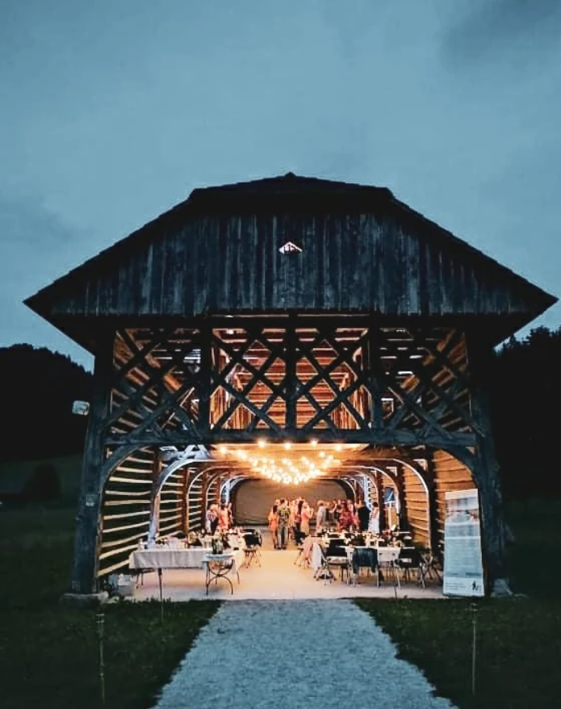

Muzejske razstave
Štiri stalne zbirke, urejene v sodelovanju z Loškim muzejem, o rodbini Kalan, Ivanu in Franji Tavčar ter kuhinji 19. stoletja.
Ob skodelici kave
Kavarna je le izhodišče. Dvorec in njegova okolica ponujata popoldne zgodovine, narave in miru, za aktivnejše pa še teniško igrišče in e-kolesa.
01 · Dediščina
Štiri stalne zbirke, urejene v sodelovanju z Loškim muzejem, o rodbini Kalan, Ivanu in Franji Tavčar ter kuhinji 19. stoletja.
Obnovljena kapela z grobnico in bronast spomenik pisatelju sredi urejenega parka.
Dr. Tavčar je tu uredil prvo teniško igrišče v takratni državi. Vsako leto ga oživi dogodek Tenis v belem.

Iz leta 1863
Mogočen kozolec s šestimi polji stoji tik ob dvorcu. Obnovljen je bil z novo strešno kritino, danes pa je priljubljen motiv za fotografije in prizorišče poročnih obredov.
02 · Narava in sprehodi
Vrt ob kavarni, iz katerega nabiramo zelišča in cvetlice za naše čaje in limonade.
Poljanska Sora in griči Poljanske doline vabijo na sprehod pred postankom pri nas ali po njem.
Na dvorcu dobite zemljevida občinskega pohodnega in kolesarskega kroga.

Tik pod dvorcem
Sprehod ob reki je lep zaključek obiska, še posebej jeseni, ko se griči nad dolino obarvajo.
03 · Doživetja in rezervacije
Izberite, kaj vas zanima, in nam pošljite povpraševanje – obrazec se izpolni samodejno.

Isto travnato igrišče, ki ga je uredil dr. Tavčar. Rezervirajte ga vsaj dva delovna dneva prej.
Pošlji povpraševanje →Načrtujte obisk
Kavarna je odprta vsak dan od 9.00 do 19.00.